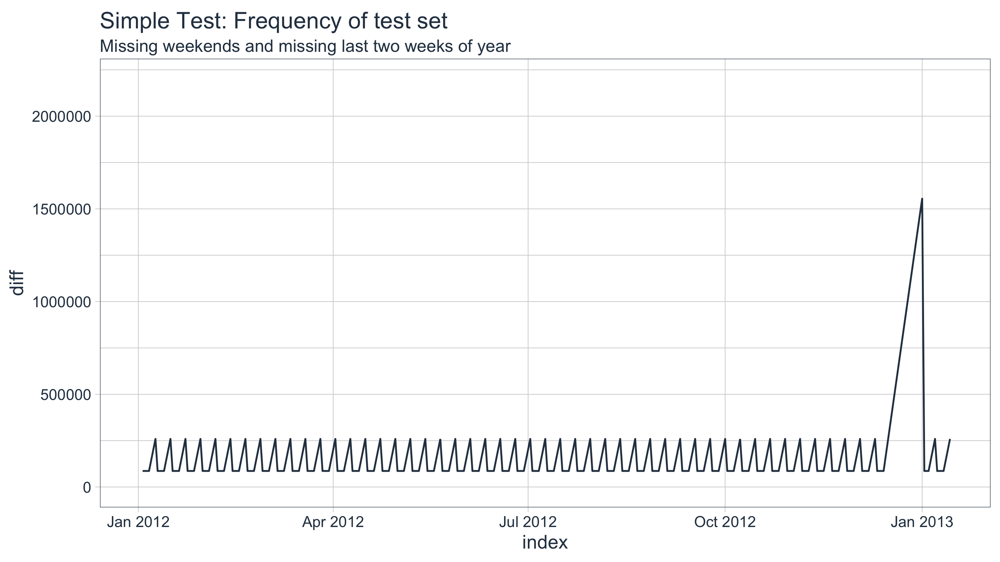
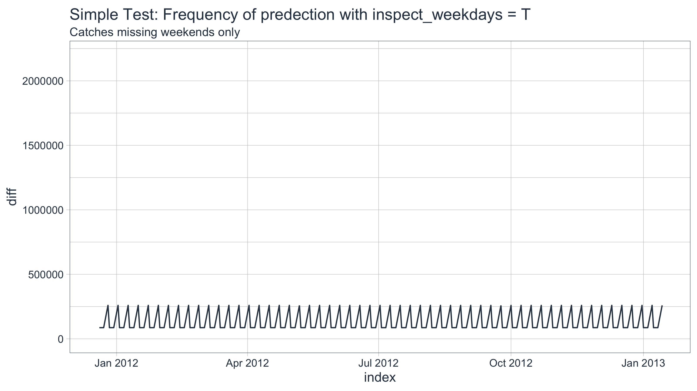
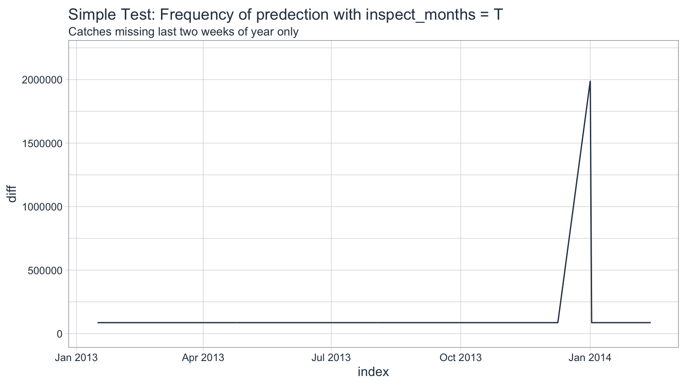
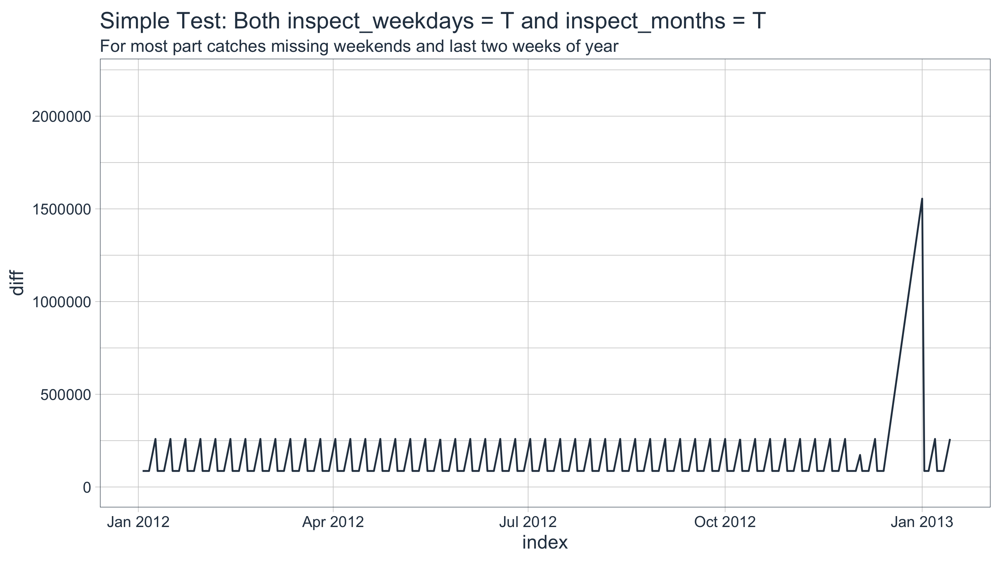
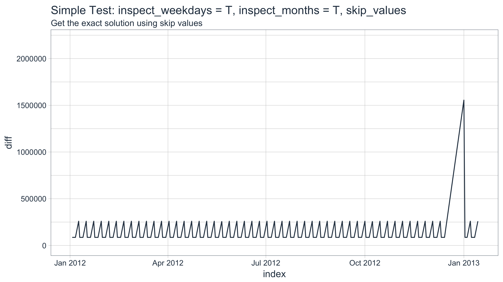
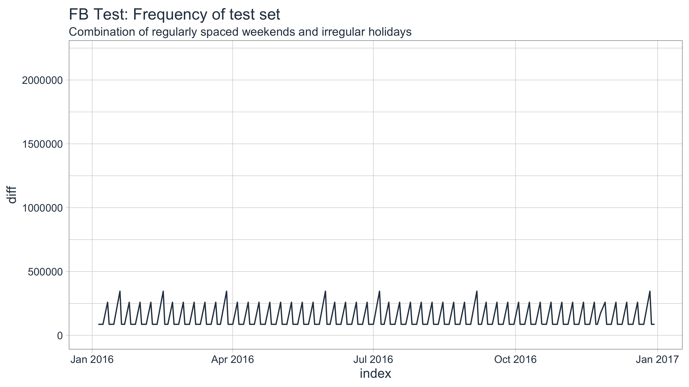
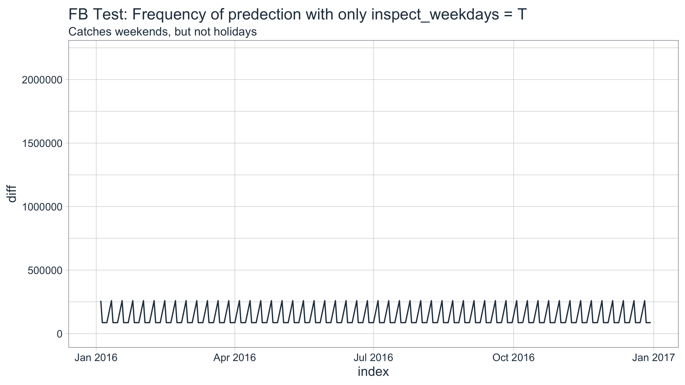
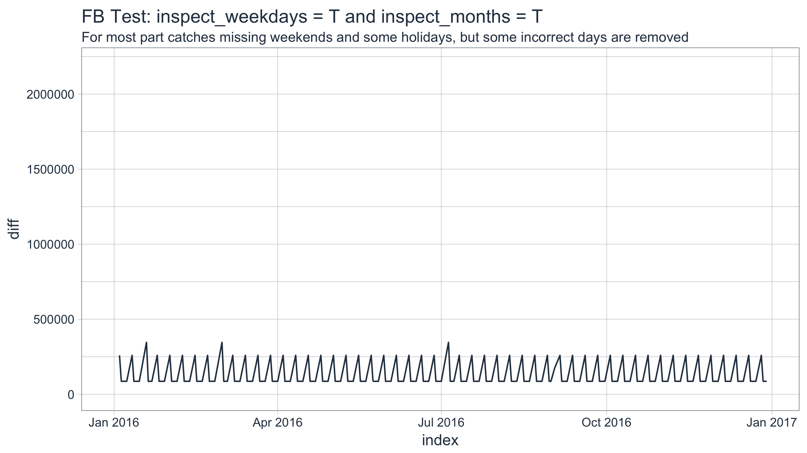
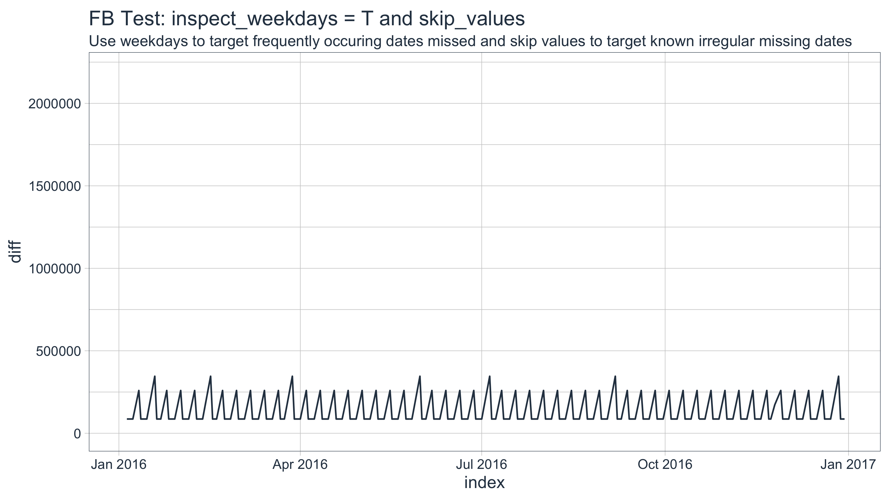

A collection of tools for working with time series in R
A common task in forecasting is generating a future date sequence that mimics the existing index. This task can be incredibly important to the validity of the model. In this vignette the user will learn several methods to generate a future time series index from an existing index using the tk_make_future_timeseries() function along with pros and cons of each and testing for accuracy. We’ll focus on making future dates with a daily frequency, which tends to be the most difficult to generate due to holidays, seasonality, weekends, etc. We’ll use two cases to illustrate the pros and cons:
Before we get started, load the following packages.
library(tidyquant)
library(timekit)This is a simulated example that shows how to use the tk_make_future_timeseries() function. We’ll create a sequence of dates beginning in 2010, and extending through the first two weeks of 2013. The sequence is daily periodicity. We’ll split into training and test sets. The train set will be used to predict the future dates. The test set will be used for comparison.
# Create sequence with omitted weekends and omitted last two weeks of each year
idx <- seq.Date(ymd("2010-01-01"), by = "day", length.out = 1110) %>%
tk_get_timeseries_signature() %>%
filter(!(wday.lbl) %in% c("Saturday", "Sunday")) %>%
filter(!(week %in% c(51, 52, 53))) %>%
tk_index()
idx_train <- idx[1:500]
idx_test <- idx[501:length(idx)]First we visualize the frequency of the simulated test index, which is what we will generate as a future time series. The tk_get_timeseries_signature() function retrieves the differences (frequency or “diff” column) of the test dataset. We can then plot using ggplot(). The frequency (diff) is in seconds. Since it’s daily periodicity, the base 86,400 seconds. Each small spike to 253,800 seconds is a weekend, and the large spike to 1,555,200 seconds is the missing two week period at the end of the year.
idx_test %>%
tk_get_timeseries_signature() %>%
ggplot(aes(x = index, y = diff)) +
geom_line(color = palette_light()[[1]]) +
theme_tq() +
labs(title = "Simple Test: Frequency of test set",
subtitle = "Missing weekends and missing last two weeks of year") +
scale_y_continuous(limits = c(0, 2.2e6))
inspect_weekdays is useful for finding and removing missing dates that occur on a weekly, bi-weekly, tri-weekly or quad-weekly frequency (such as weekends or every other Friday off). When applied to the example, the algorithm finds and removes omitted weekends of the future data set.
idx_train %>%
tk_make_future_timeseries(n_future = 395, inspect_weekdays = TRUE) %>%
tk_get_timeseries_signature() %>%
ggplot(aes(x = index, y = diff)) +
geom_line(color = palette_light()[[1]]) +
theme_tq() +
labs(title = "Simple Test: Frequency of predection with inspect_weekdays = T",
subtitle = "Catches missing weekends only") +
scale_y_continuous(limits = c(0, 2.2e6))
inspect_months is useful for finding and removing missing dates that occur on a monthly, quarterly, yearly frequency (such as last couple weeks of the year off). Applying to the example, the algorithm finds and removes omitted dates in the last two weeks of the year of the future data set.
idx %>%
tk_make_future_timeseries(n_future = 395, inspect_months = TRUE) %>%
tk_get_timeseries_signature() %>%
ggplot(aes(x = index, y = diff)) +
geom_line(color = palette_light()[[1]]) +
theme_tq() +
labs(title = "Simple Test: Frequency of predection with inspect_months = T",
subtitle = "Catches missing last two weeks of year only") +
scale_y_continuous(limits = c(0, 2.2e6))
We can combine both inspect_weekdays and inspect_months to detect both sequences of missing dates. Applying both to the example removes the weekends and last two weeks of each year. However, there is one error made due to the interactions of the two algorithms.
idx_future_wdays_and_months <- idx_train %>%
tk_make_future_timeseries(n_future = 395, inspect_weekdays = T, inspect_months = T)
idx_future_wdays_and_months %>%
tk_get_timeseries_signature() %>%
ggplot(aes(x = index, y = diff)) +
geom_line(color = palette_light()[[1]]) +
theme_tq() +
labs(title = "Simple Test: Both inspect_weekdays = T and inspect_months = T",
subtitle = "For most part catches missing weekends and last two weeks of year") +
scale_y_continuous(limits = c(0, 2.2e6))
We can inspect further by analyzing both the Type I errors (errors that the algorithm removed incorrectly) and Type II errors (errors that the prediction that algorithm failed to remove).
Errors that algorithm removed incorrectly. These errors are the most dangerous because users may not know which days were removed incorrectly. If known, they can be accounted for with insert_values. The easiest way to tell is by reviewing the frequency chart for larger than normal spikes.
idx_test[!(idx_test %in% idx_future_wdays_and_months)]## [1] "Date of length 0"Errorst that algorithm failed to remove. These errors are the eaisest to manage because typically the analyst generally knows which days should be removed. These errors can be addressed with skip_values provided prediction length is manageable.
idx_future_wdays_and_months[!(idx_future_wdays_and_months %in% idx_test)]## [1] "2012-12-01"insert_values adds values to the future time series, and skip_values removes values from the future time series. The Type I errors (incorrectly removed observations) can be addressed with insert_values. The Type II errors (incorrectly kept observations) can be addressed with skip_values. We had one Type II error in the example, and we’ll correct with skip_values. Make sure the class of the value passed to skip_values matches the class of the time series index.
idx_future_wdays_months_skip_vals <- idx_train %>%
tk_make_future_timeseries(n_future = 395,
inspect_weekdays = T,
inspect_months = T,
skip_values = ymd("2012-12-01"))
idx_future_wdays_months_skip_vals %>%
tk_get_timeseries_signature() %>%
ggplot(aes(x = index, y = diff)) +
geom_line(color = palette_light()[[1]]) +
theme_tq() +
labs(title = "Simple Test: inspect_weekdays = T, inspect_months = T, skip_values",
subtitle = "Get the exact solution using skip values") +
scale_y_continuous(limits = c(0, 2.2e6))
The FB data from the FANG data set has missing dates that follow primarily a weekly pattern with irregular holidays mixed in. We’ll predict which days will be traded using combinations of inspect_weekdays and inspect_months.
FB_tbl <- FANG %>%
filter(symbol %in% "FB")
FB_train <- filter(FB_tbl, year(date) < 2016)
FB_test <- filter(FB_tbl, year(date) >= 2016)
idx_train <- tk_index(FB_train)
idx_test <- tk_index(FB_test)Visualize the test index frequency.
idx_test %>%
tk_get_timeseries_signature() %>%
ggplot(aes(x = index, y = diff)) +
geom_line(color = palette_light()[[1]]) +
theme_tq() +
labs(title = "FB Test: Frequency of test set",
subtitle = "Combination of regularly spaced weekends and irregular holidays") +
scale_y_continuous(limits = c(0, 2.2e6))
Inspecting weekdays gets us pretty close. The algorithm correctly removes weekends. It misses the holidays, which may be acceptable since we can omit easily using skip_values.
# Inspect weekdays: Removes weekends from future series
idx_future_wdays <- idx_train %>%
tk_make_future_timeseries(n_future = 366, inspect_weekdays = TRUE, inspect_months = FALSE)
# Visualize frequency
idx_future_wdays %>%
tk_get_timeseries_signature() %>%
ggplot(aes(x = index, y = diff)) +
geom_line(color = palette_light()[[1]]) +
theme_tq() +
labs(title = "FB Test: Frequency of predection with only inspect_weekdays = T",
subtitle = "Catches weekends, but not holidays") +
scale_y_continuous(limits = c(0, 2.2e6))
# Type I Errors
idx_test[!(idx_test %in% idx_future_wdays)]## [1] "Date of length 0"# Type II Errors
idx_future_wdays[!(idx_future_wdays %in% idx_test)]## [1] "2016-01-01" "2016-01-18" "2016-02-15" "2016-03-25" "2016-05-30"
## [6] "2016-07-04" "2016-09-05" "2016-11-24" "2016-12-26"If we apply both inspect weekdays and inspect months the errors actually increase. This is due to the difficulty in predicting holidays (days off throughout the year), which tend to occur with unique rules (e.g. Memorial Day is last Monday of May).
# Inspect weekdays: Removes weekends from future series
idx_future_wdays_and_months <- idx_train %>%
tk_make_future_timeseries(n_future = 366, inspect_weekdays = TRUE, inspect_months = TRUE)
# Visualize frequency
idx_future_wdays_and_months %>%
tk_get_timeseries_signature() %>%
ggplot(aes(x = index, y = diff)) +
geom_line(color = palette_light()[[1]]) +
theme_tq() +
labs(title = "FB Test: inspect_weekdays = T and inspect_months = T",
subtitle = "For most part catches missing weekends and some holidays, but some incorrect days are removed") +
scale_y_continuous(limits = c(0, 2.2e6))
We can see that leap year (“2016-02-29”), Incorrect Labor Day (“2016-09-01”, first Monday in September was “2016-09-05”), and New Year’s Eve (“2016-12-30”) were incorrectly removed.
# Type I Errors
idx_test[!(idx_test %in% idx_future_wdays_and_months)] ## [1] "2016-02-29" "2016-09-01" "2016-12-30"The Type II errors were predicted with slightly higher accuracy, but at the expense of Type I errors.
# Type II Errors
idx_future_wdays_and_months[!(idx_future_wdays_and_months %in% idx_test)] ## [1] "2016-01-01" "2016-02-15" "2016-03-25" "2016-05-30" "2016-09-05"
## [6] "2016-11-24" "2016-12-26"We can correct for this using the skip_values and inspect_weekdays arguments. The former removes specific observations while the latter uses a logistic regression algorithm to identify the probability of specific weekdays being present in the future index. The algorithm for inspecting weekdays will check for any weekdays that are missing on a weekly, bi-weekly, tri-weekly, or quad-weekly frequency and automatically remove these days. As shown below, holidays and weekends are accounted for.
# Build vector of holidays in correct timeseries class using ymd()
holidays <- c(
"2016-01-01", "2016-01-18", "2016-02-15", "2016-03-25", "2016-05-30",
"2016-07-04", "2016-09-05", "2016-11-24", "2016-12-26"
) %>% ymd()
# Create future index
idx_future <- idx_train %>%
tk_make_future_timeseries(n_future = 366, inspect_weekdays = TRUE, skip_values = holidays)
# Plot using ggplot
idx_future %>%
tk_get_timeseries_signature() %>%
ggplot(aes(x = index, y = diff)) +
geom_line(color = palette_light()[[1]]) +
theme_tq() +
labs(title = "FB Test: inspect_weekdays = T and skip_values",
subtitle = "Use weekdays to target frequently occuring dates missed and skip values to target known irregular missing dates") +
scale_y_continuous(limits = c(0, 2.2e6))
Building the future date sequence is an essential part of forecasting using timekit. An innaccurate date sequence can hurt the performance of the forecast. The tk_make_future_index() function has methods to remove frequently missing dates. However, the user should always review the output to ensure an accurate future date sequence is achieved.
Further, holidays are difficult to predict using inspect_months due to the irregular nature. It is likely better for the user to select inspect_weekdays = TRUE and use skip_values to remove irregular holidays. Use inspect_months when there are missing dates that occur on a monthly, quarterly, or yearly frequency as part of a regular pattern. Use skip_values and insert_values to remove and add dates as necessary to account for irregular missing days.